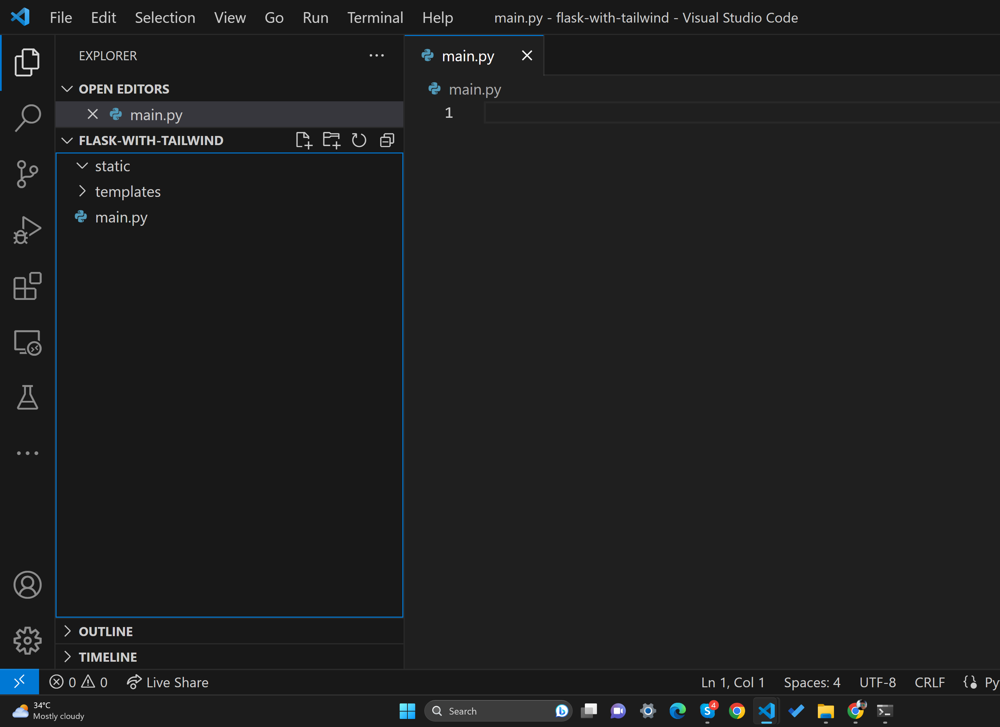
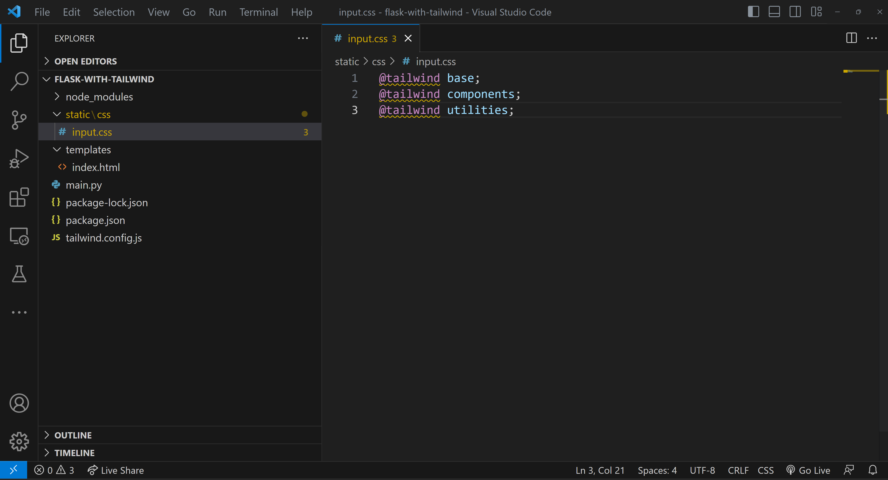
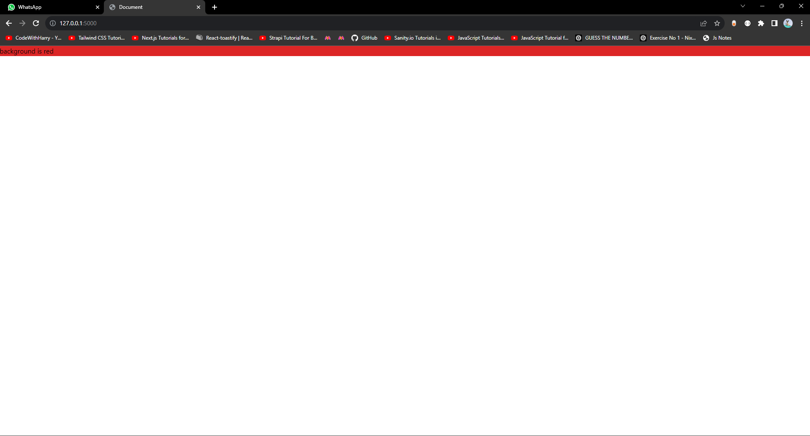
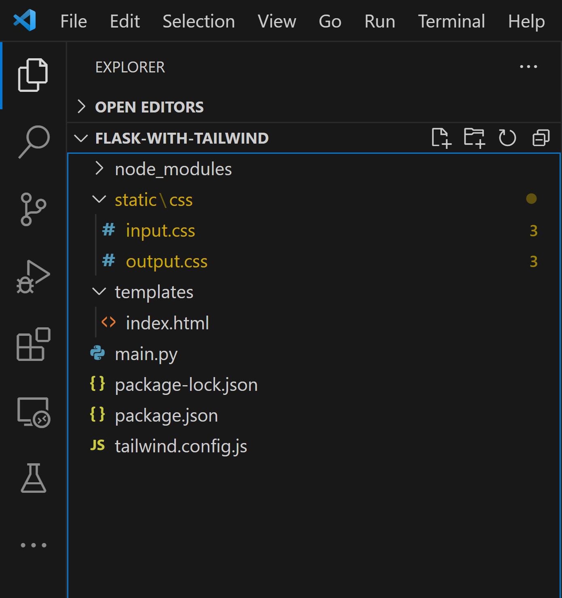

I use Tailwind CSS a lot and recently I integrated my flask app with TailwindCSS in the best possible way. Other online guides are mostly outdated, so here is how to exactly integrate Tailwind CSS with Flask.
Let's start with a minimal Flask app
I am setting up a very basic Flask app and will be building on top of this later using Taliwind. Here is what my folder structure looks like:
As you can see we have a static folder, a template folder, and an empty main.py file.
flask_app_folder/ ├── main.py ├── static └── templates
I will go to the flask documentation and get a minimal Flask app for integrating tailwind CSS.
Here is what my main.py looks like now:
from flask import Flask
app = Flask(__name__)
@app.route("/")
def hello_world():
return "<p>Hello, World!</p>"
app.run(debug=True)
This step might sound strange but we need it to automatically compile our tailwind CSS files to make sure only the tailwind classes we are using are included in the output CSS file.
Let me show you step-by-step how to do it
Go to the nodejs website and download and install node.js for your machine. Node.js 12.13.0 or higher is required to use Tailwind CSS.
Run the following command in the node.js integrated terminal:
npm init -y
Then install tailwind CSS using the following command:
npm i tailwindcss
Then run the following command to initialize tailwindcss
enpx tailwindcss init
You will see a success message like this:
PS D:\Codewithharry.com\1. using flask with tailwind\flask-with-tailwind> npx tailwindcss init Created Tailwind CSS config file: tailwind.config.js PS D:\Codewithharry.com\1. using flask with tailwind\flask-with-tailwind>
This command automatically generates a tailwind.config.js file which contains important configuration for Tailwind CSS.
Please note that all the file paths mentioned in the blog, including the ones in tailwind.config.js and the Tailwind build command, are relative to the root directory of your project.
Change the content section of the file such that the final tailwind.config.js looks something like this:
/** @type {import('tailwindcss').Config} */
module.exports = {
content: ["./templates/*.html"],
theme: {
extend: {},
},
plugins: [],
}
This tells Tailwind CSS to look for tailwind classes inside HTML files of the /templates folder.
Let's now create a CSS file that will contain the base code of tailwind CSS. I am choosing to create this file inside "/static/css/input.css".
This location is a matter of choice but if you are choosing this, the later commands must refer to this location as well.
Enter the following code inside input.css
@tailwind base; @tailwind components; @tailwind utilities;
At this point, our project looks something like this:
We will now run a command that will take the input.css file as input and generate the output CSS which will only contain the tailwind classes required by our html files.
Open a new terminal and run this command:
npx tailwindcss -i ./static/css/input.css -o ./static/css/output.css --watch
This command tells tailwind to generate an output.css file which only contains the utility classes you have used inside the HTML files of your templates folder.
Now you can include file ./static/css/output.css by adding the below command in your HTML files
<link href="{{url_for('static',filename='css/output.css')}}" rel="stylesheet">
Let's test this configuration by creating a demo html file, index.html inside the templates directory which looks something like this:
<!-- File ./templates/index.html -->
<!DOCTYPE html>
<html lang="en">
<head>
<meta charset="UTF-8">
<meta name="viewport" content="width=device-width, initial-scale=1.0">
<link href="{{url_for('static',filename='css/output.css')}}" rel="stylesheet">
<title>Document</title>
</head>
<body>
<div class="bg-red-600">
background is red
</div>
</body>
</html>
Change your flask app (file main.py) to look something like this:
from flask import Flask, render_template
app = Flask(__name__)
@app.route("/")
def hello_world():
return render_template("index.html")
app.run(debug=True)
Open a new terminal (keeping the other terminal running the tailwind command active) and run the following command to execute the flask app:
python main.py
Our page looks something like this:
and our final folder structure looks something like this:
If you look inside output.css, you will notice that only the tailwind classes used are included in the output.css which reduces the file size of output.css and improves performance drastically.
So instead of sending a full tailwind bundle of 3-4mb with all utility classes, we are including a file 10 KB file in our final build.
If you think typing the command "npx tailwindcss -i ./static/css/input.css -o ./static/css/output.css --watch" might be quite cumbersome, you can create an alias of this command by including a script called "buildcss" in your package.json like this:
{
"name": "flask-with-tailwind",
"version": "1.0.0",
"description": "",
"main": "index.js",
"scripts": {
"test": "echo \"Error: no test specifiedexit 1",
"buildcss": "npx tailwindcss -i ./statiinput.css -o ./static/css/output.css --watch"
},
"keywords": [],
"author": "",
"license": "ISC",
"dependencies": {
"tailwindcss": "^3.3.3"
}
}
Now you can easily run npm run buildcss as an alias of npx tailwindcss -i ./static/css/input.css -o ./static/css/output.css --watch
Congratulations, you have successfully incorporated Tailwind CSS with your Flask app. You can now start using Tailwind CSS utility classes or know more about them in the official Tailwind CSS documentation
Let me know your thoughts in the comments below. Happy Coding!